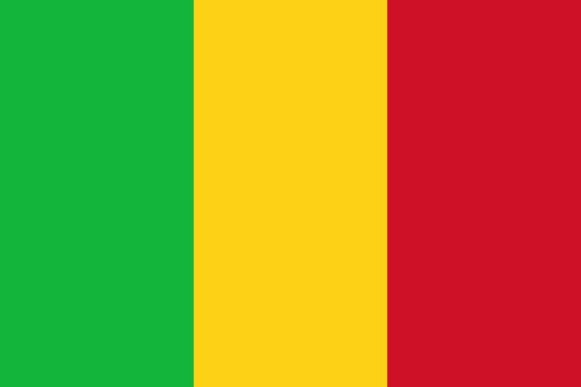

MUSÉOGRAPHIE AFRICAINE
Les musées d’Afrique préservent l’histoire, l’art et les cultures du continent. Ils exposent des objets anciens, masques, sculptures, textiles et artefacts. Ces lieux valorisent les traditions africaines, éduquent le public et renforcent l’identité culturelle à travers le patrimoine.
1. Afrique du Sud
Le Musée du District Six à Cape Town raconte l'histoire de cette communauté détruite durant l'apartheid, préservant les mémoires à travers des expositions poignantes et des témoignages. Ce musée est un symbole de résistance et de réconciliation, attirant des visiteurs intéressés par l'histoire sociale et politique du pays. En organisant des programmes éducatifs et des événements commémoratifs, il joue un rôle essentiel dans la sensibilisation à l'héritage de l'apartheid.
VOIR EN...2. Algérie
Le Musée national des beaux-arts d'Alger, fondé en 1930, est l'un des principaux musées d'Afrique. Il abrite une vaste collection d'œuvres d'art algérien et international, avec des peintures de maîtres européens comme Delacroix et Corot. La richesse de ses mosaïques romaines témoigne de l'histoire complexe du pays, illustrant la confluence des cultures. Des expositions temporaires mettent en avant l'art contemporain algérien, offrant un aperçu des tendances actuelles.
VOIR EN...3. Angola
Le Musée national d'Anthropologie à Luanda met en avant la culture angolaise à travers des objets d'art traditionnel et des artefacts historiques. Il illustre l'histoire complexe du pays avant et après l'indépendance, avec des expositions sur les traditions des différentes ethnies angolaises. Ce musée est essentiel pour promouvoir la fierté nationale et l'identité culturelle, en offrant aux visiteurs un aperçu des pratiques et des croyances des peuples angolais.
VOIR EN...4. Bénin
Le Musée d’Histoire de Ouidah, installé dans l’ancien fort portugais de São João Baptista, est un lieu emblématique retraçant l’histoire du Bénin, notamment la traite négrière. Il présente des objets rituels vodou, des témoignages de l’esclavage et des pièces coloniales. Ce musée incarne la mémoire douloureuse mais essentielle du passé, tout en valorisant la richesse des cultures béninoises. Des expositions temporaires y célèbrent les arts traditionnels et contemporains du pays.
VOIR EN...5. Botswana
Le Musée national de Botswana à Gaborone, inauguré en 1996, expose l'histoire et la culture botswanaises à travers des objets d'art, d'artisanat et des expositions sur la faune. Le musée joue un rôle fondamental dans l'éducation et la sensibilisation à l'identité culturelle botswanaise, en organisant des événements et des ateliers qui impliquent la communauté locale. Il contribue également à la préservation du patrimoine culturel, en mettant en valeur les traditions.
VOIR EN...6. Burkina Faso
Le Musée national du Burkina Faso, situé à Ouagadougou, conserve des objets ethnographiques représentant les diverses cultures du pays. Créé en 1962, il regroupe des masques, des instruments de musique, des costumes et des artefacts liés aux traditions des Mossis, Bobo, Gourounsi, et autres groupes. Il témoigne de la diversité culturelle burkinabè et de son artisanat riche. Les expositions mettent en lumière les pratiques rituelles, l’histoire précoloniale et l’évolution des sociétés.
VOIR EN...7. Burundi
Le Musée vivant de Bujumbura permet aux visiteurs de découvrir la culture burundaise à travers des reconstitutions de villages traditionnels et des démonstrations d'artisanat local. Ce musée est un espace interactif qui favorise l'apprentissage et la préservation des traditions burundaises, offrant aux visiteurs une immersion dans la culture locale. En organisant des événements culturels et des ateliers, il encourage la participation de la communauté et la valorisation de l'héritage burundais.
VOIR EN...8. Cameroun
Le Musée de la civilisation à Yaoundé, fondé en 1990, conserve des objets d'art et des traditions des différentes ethnies du pays. Ses expositions favorisent la compréhension de la richesse culturelle camerounaise, mettant en lumière les pratiques artistiques et sociales. Le musée est un lieu clé pour la recherche et l'éducation sur la diversité culturelle, organisant des événements culturels et éducatifs pour les écoles et le grand public. Il contribue à la valorisation du patrimoine camerounais et à la promotion de la paix et de l'unité nationale.
VOIR EN...9. Cap-Vert
Le Musée ethnographique de Praia, fondé en 1997, est situé dans le quartier historique de Platô. Il expose des objets illustrant la culture créole cap-verdienne, incluant des ustensiles, instruments de musique, textiles et objets religieux. Le musée documente le quotidien des îles à travers les siècles, en montrant l’impact du métissage culturel sur les traditions locales. On y découvre aussi des traces de la traite négrière et des influences portugaises. Des expositions temporaires abordent la littérature cap-verdienne et les pratiques orales.
VOIR EN...10. Centrafrique
Le Musée de Bangui, bien que modeste, présente des sculptures et objets artisanaux, représentant la diversité culturelle du pays. Il joue un rôle important dans la préservation de l'héritage national, en mettant en avant l'artisanat local et les traditions. Le musée est un espace de dialogue et de partage culturel, essentiel pour la cohésion sociale dans un contexte souvent difficile. En organisant des ateliers et des événements, il encourage la participation de la communauté et l'engagement envers la culture, tout en renforçant l'identité nationale et la fierté culturelle.
VOIR EN...11. Comores
Les musées locaux mettent en avant l'artisanat traditionnel et les pratiques culturelles, offrant un aperçu précieux de l'héritage comorien à travers des objets d'art et des expositions. Ces initiatives contribuent à la valorisation de la culture comorienne, souvent méconnue. En organisant des événements et des activités éducatives, les musées visent à sensibiliser le public à l'importance de la préservation de leur patrimoine culturel, tout en renforçant le lien entre les générations et la fierté nationale.
VOIR EN...12. R.Congo

Le Musée des beaux-arts de Brazzaville expose des œuvres d'art contemporain africain et local. Il joue un rôle clé dans la promotion de la culture congolaise, soutenant les artistes émergents et établis. Le musée organise également des expositions temporaires qui favorisent les échanges culturels, offrant une plateforme pour le dialogue entre artistes et créateurs. En mettant en avant la créativité congolaise, le musée contribue à la valorisation de l'art comme vecteur de changement social et de développement, tout en renforçant l'identité culturelle du pays.
VOIR EN...13. R.D.Congo
Le Musée national de Kinshasa est un trésor d'art africain et d'histoire. Il abrite des artefacts allant de l'antiquité à l'époque moderne, illustrant la richesse culturelle du pays. Le musée est un lieu d'éducation et de sensibilisation, avec des programmes visant à valoriser le patrimoine culturel congolais. En organisant des expositions et des événements, il encourage la participation de la communauté et la préservation des traditions locales, contribuant ainsi à la construction d'une identité nationale solide et à la fierté culturelle.
VOIR EN...14. Côte d’Ivoire
Le Musée des Civilisations de Côte d’Ivoire, situé à Abidjan, est l’un des plus riches d’Afrique de l’Ouest. Fondé en 1942, il conserve plus de 15 000 objets ethnographiques et archéologiques. Sa collection comprend des masques, statues, objets rituels et instruments de musique issus des cultures Akan, Sénoufo, Dan ou Baoulé. Le musée valorise la diversité culturelle ivoirienne et propose des expositions temporaires sur l’art contemporain et la mémoire coloniale. Victime de dégradations durant la crise politique.
VOIR EN...15. Djibouti
Le Musée de Djibouti conserve des objets archéologiques et ethnographiques, témoignant de l'histoire et de la diversité culturelle du pays, tout en célébrant son patrimoine maritime. Les expositions visent à éduquer le public sur l'importance de la culture locale et son évolution au fil du temps. En organisant des événements culturels, le musée favorise l'engagement communautaire et la sensibilisation à l'histoire djiboutienne, contribuant ainsi à la préservation de l'identité nationale.
VOIR EN...16. Égypte
Le Musée égyptien du Caire, créé en 1902, est célèbre pour sa collection inégalée d'antiquités. Il abrite des objets de Toutankhamon, des momies et des statues pharaoniques, représentant l'une des plus grandes richesses culturelles au monde. Ses expositions illustrent l'art et la culture égyptienne à travers les âges, permettant aux visiteurs de comprendre l'importance historique de l'Égypte dans l'Antiquité. Le musée attire chaque année des millions de visiteurs fascinés par son patrimoine.
VOIR EN...17. Érythrée
Le Musée national d'Érythrée à Asmara, fondé en 1992, abrite des artefacts archéologiques et des œuvres d'art, illustrant l'histoire ancienne et moderne de ce pays. Le musée est un lieu de fierté nationale, mettant en avant la richesse culturelle érythréenne et son patrimoine. En organisant des expositions et des événements, il joue un rôle essentiel dans l'éducation du public et la préservation de l'identité nationale, tout en renforçant le lien entre les générations.
VOIR EN...18. Eswatini
Le Musée d'histoire naturelle à Lobamba présente non seulement la faune et la flore locales, mais aussi des éléments de la culture swazie, créant un lien entre nature et culture. Ce musée est essentiel pour la sensibilisation à la biodiversité et à l'héritage culturel d'Eswatini. En organisant des programmes éducatifs et des événements culturels, il encourage l'engagement des jeunes et la valorisation de la culture locale, tout en renforçant l'identité nationale.
VOIR EN...19. Éthiopie
Le Musée national d'Éthiopie à Addis-Abeba est célèbre pour ses fossiles d'hominidés, dont "Lucy", ainsi que pour ses riches collections d'art et d'artefacts culturels. Ce musée est un pilier de l'éducation sur l'histoire humaine et la culture éthiopienne, attirant des chercheurs et des visiteurs du monde entier. En organisant des expositions et des événements, il contribue à la sensibilisation à l'importance de la préservation du patrimoine éthiopien, tout en renforçant l'identité nationale.
VOIR EN...20. Gabon
Le Musée national des arts et traditions gabonais à Libreville préserve l'art et les traditions locales à travers des expositions d'objets rituels et d'artisanat. Il illustre la diversité culturelle du Gabon et joue un rôle essentiel dans l'éducation et la sensibilisation à la culture gabonaise. En organisant des événements et des ateliers, le musée encourage l'implication des jeunes et la transmission des savoirs traditionnels aux nouvelles générations.
VOIR EN...21. Gambie
Le Musée national de Gambie, situé à Banjul, retrace l’histoire politique, culturelle et sociale du pays. Inauguré en 1985, il expose des objets préhistoriques, des outils agricoles, des instruments de musique et des artefacts liés à la traite négrière. Une section est dédiée à Kunta Kinteh et à l’impact de l’esclavage sur les sociétés gambiennes. Le musée organise des expositions sur les traditions orales, les chefs coutumiers et la résistance coloniale.
VOIR EN...22. Ghana
Le Musée national du Ghana, à Accra, est le plus ancien musée du pays, fondé en 1957, l’année de l’indépendance. Il abrite une importante collection d’art africain, d’objets archéologiques, textiles, perles, poteries et instruments de musique. Il témoigne des traditions des Ashanti, Ewe, Ga et d’autres groupes culturels. Une section traite du commerce de l’or et de la traite négrière. Des expositions temporaires abordent les mouvements panafricanistes, l’art moderne et la vie postcoloniale.
VOIR EN...23. Guinée
Le Musée national de Sandervalia, à Conakry, est un lieu clé pour la conservation du patrimoine guinéen. Il présente des objets issus des groupes ethniques comme les Peuls, Soussous, Malinkés ou Kissis : masques, statuettes, objets rituels et textiles. Installé dans une ancienne résidence coloniale, le musée offre aussi des expositions temporaires sur l’art contemporain, les traditions orales et les danses locales. Malgré des moyens limités, il reste un centre essentiel de préservation culturelle.
VOIR EN...24. Guinée-BI
Le Musée ethnographique national de Guinée-Bissau, situé à Bissau, se consacre à la richesse culturelle des différentes ethnies du pays comme les Balantes, Fulas ou Manjacos. Il conserve des objets du quotidien, instruments de musique, sculptures et artefacts rituels. Ce musée met en valeur l’héritage des traditions orales, les danses cérémonielles et les croyances ancestrales. Malgré des infrastructures modestes, il organise des ateliers, des expositions et des rencontres avec des artisans et conteurs locaux.
VOIR EN...25. Guinée-EQ
Le Musée national de Malabo, bien que moins connu, présente des objets historiques et culturels, jouant un rôle important dans la préservation de l'identité équatoguinéenne. Les expositions reflètent la diversité ethnique du pays, mettant en avant l'artisanat et les traditions locales. Le musée est un espace d'apprentissage et de découverte, essentiel pour la sensibilisation à l'histoire et à la culture équatoguinéennes. En organisant des événements culturels, il contribue à renforcer le lien entre les générations et à promouvoir la fierté nationale.
VOIR EN...26. Kenya
Le Musée national de Nairobi conserve des artefacts d'art et d'histoire kenyane, notamment des œuvres d'artisanat traditionnel et des expositions sur la biodiversité du pays. Il joue un rôle clé dans la promotion de l'identité culturelle kenyane, en offrant une plateforme aux artistes locaux. En organisant des événements et des programmes éducatifs, le musée contribue à la valorisation du patrimoine culturel et naturel du Kenya, tout en renforçant le sentiment d'appartenance.
VOIR EN...27. Lesotho
Le Musée national de Lesotho, situé à Maseru, présente l'histoire et la culture basotho à travers des objets d'art, des costumes traditionnels et des expositions sur l'histoire du pays. Ce musée est un espace vital pour la préservation de l'identité culturelle, jouant un rôle clé dans la sensibilisation des jeunes à leur patrimoine. En organisant des événements et des ateliers, il favorise l'appropriation de la culture basotho, tout en renforçant le lien entre les générations.
VOIR EN...28. Libéria
Le Liberia National Museum, situé à Monrovia, est un symbole de la mémoire nationale. Inauguré en 1958, il est installé dans l’ancien palais de justice de la capitale. Il conserve des objets historiques, des photographies, des instruments de musique et des artefacts traditionnels représentant les différentes ethnies du pays. Des expositions retracent l’histoire politique du Liberia, y compris sa fondation par des esclaves affranchis et les périodes de guerre civile. Malgré les destructions subies.
VOIR EN...29. Libye
Le Musée national de Tripoli, aussi appelé Musée Jamahiriya, est installé dans l’ancien château ottoman de la ville. Il présente une vaste collection d’objets couvrant l’histoire libyenne de la Préhistoire à l’époque moderne. On y découvre des mosaïques romaines, statues grecques, manuscrits arabes et objets touaregs. Il illustre la richesse culturelle de la Libye, carrefour entre Méditerranée, Afrique et monde arabe. Fermé par intermittence depuis les conflits récents, le musée continue de représenter un haut lieu du patrimoine national.
VOIR EN...30. Madagascar
Le Musée d'art et d'archéologie à Antananarivo expose l'histoire et l'art malgaches, incluant des sculptures, des objets ethnographiques et des expositions sur la biodiversité. Ce musée est essentiel pour la sensibilisation à la culture malgache, offrant un aperçu des traditions et des pratiques artistiques. En organisant des événements et des programmes éducatifs, il encourage l'engagement de la communauté et la valorisation du patrimoine culturel, tout en renforçant l'identité nationale.
VOIR EN...31. Malawi
Le Musée national de Malawi à Blantyre met en avant l'histoire et la culture malawites, avec des expositions d'artefacts historiques, d'artisanat et d'œuvres d'art contemporaines. Ce musée est un lieu d'apprentissage sur l'identité nationale, jouant un rôle clé dans la préservation du patrimoine. En organisant des événements culturels et des ateliers, il favorise la sensibilisation à l'histoire et à la culture malawites, tout en renforçant le lien entre les générations.
VOIR EN...32. Mali
Le Musée national du Mali, situé à Bamako, est l’un des musées les plus importants d’Afrique de l’Ouest. Inauguré en 1953, il conserve des objets archéologiques, ethnographiques et artistiques représentatifs des grandes civilisations maliennes : l’empire du Mali, les Dogons, les Bambaras, les Touaregs. On y admire des masques, textiles, poteries, statues, et des objets rituels. Le musée joue un rôle de référence dans la préservation du patrimoine africain et accueille régulièrement des expositions internationales.
VOIR EN...33. Maroc
Le Musée Mohammed VI d'art moderne et contemporain, ouvert en 2014 à Rabat, est le premier musée d'art moderne du Maroc. Il célèbre l'art marocain et africain à travers des expositions temporaires et permanentes, offrant une vitrine aux artistes contemporains. La collection inclut des œuvres d'artistes contemporains, offrant une plateforme pour l'expression artistique moderne et encourageant le dialogue culturel entre les artistes. Le musée joue un rôle fondamental dans la promotion de la créativité et de l'innovation en art.
VOIR EN...34. Maurice
Le Musée national de Mauritanie à Nouakchott, inauguré en 1988, présente des objets archéologiques et ethnographiques. Ses expositions mettent en valeur l'histoire des civilisations sahariennes et la culture mauritanienne, illustrant la richesse et la diversité des traditions locales. Le musée est un lieu d'apprentissage et de découverte, essentiel pour la préservation de l'identité culturelle du pays. Il organise régulièrement des événements éducatifs, des ateliers et des conférences, contribuant ainsi à la sensibilisation des jeunes.
VOIR EN...35. Mauritanie
Le Musée de l'Aventure du Sucre à Pamplemousse raconte l'histoire de l'industrie sucrière, illustrant son impact sur la culture et l'économie mauricienne à travers des expositions interactives. Ce musée est un lieu clé pour la compréhension de l'histoire économique de l'île, mettant en lumière les défis et les réussites des travailleurs du sucre. En organisant des événements, il encourage la participation de la communauté et la valorisation de l'héritage culturel mauricien, tout en renforçant l'identité nationale.
VOIR EN...36. Mozambique

Le Musée national d'art à Maputo expose des œuvres contemporaines et traditionnelles, mettant en avant la richesse artistique du Mozambique et ses influences culturelles variées. Ce musée est un espace de création et d'expression pour les artistes mozambicains, soutenant la scène artistique locale. En organisant des expositions et des événements, il contribue à la sensibilisation à l'importance de l'art dans la société mozambicaine, tout en renforçant l'identité nationale.
VOIR EN...37. Namibie
Le Musée d'histoire naturelle à Windhoek explore la biodiversité et la culture namibienne, offrant des expositions sur la faune locale et les traditions des peuples autochtones. Ce musée est essentiel pour la sensibilisation à l'environnement et à la culture, jouant un rôle clé dans l'éducation des jeunes sur l'importance de la préservation de la nature et de l'héritage culturel. En organisant des événements, il encourage l'engagement communautaire et la valorisation de l'identité nationale.
VOIR EN...38. Niger
Le Musée national Boubou Hama, fondé en 1959 à Niamey, est à la fois musée et parc zoologique. Il conserve une riche collection ethnographique et archéologique mettant en lumière les cultures touarègue, haoussa, zarma et peule. Les expositions incluent des outils anciens, costumes traditionnels, objets artisanaux, et fossiles préhistoriques. Ce musée se distingue par sa volonté d’allier nature, histoire et culture, offrant un espace éducatif aux familles et aux élèves.
VOIR EN...39. Nigeria
Le Musée national de Lagos, créé en 1957, est l’un des plus importants du Nigeria. Il abrite une exceptionnelle collection d’art ancien, notamment les célèbres têtes en bronze d’Ife et les plaques en laiton du royaume du Bénin. Le musée explore également l’histoire coloniale, l’indépendance et la diversité culturelle nigériane à travers objets, photographies et documents. Il joue un rôle crucial dans la promotion du patrimoine national et organise des expositions temporaires sur l’art contemporain nigérian
VOIR EN...40. Ouganda
Le Musée national d'Ouganda à Kampala présente des artefacts historiques et culturels, célébrant la diversité ethnique et les richesses culturelles de ce pays d'Afrique de l'Est. Le musée est un lieu d'éducation et de préservation du patrimoine, jouant un rôle clé dans la sensibilisation à l'histoire et aux traditions ougandaises. En organisant des expositions et des événements, il favorise l'engagement communautaire et la valorisation de l'identité culturelle, tout en renforçant le lien entre les générations.
VOIR EN...41. Rwanda
Le Mémorial du génocide à Kigali éduque sur l'histoire tragique du pays tout en honorant les victimes, offrant un espace de réflexion sur la réconciliation et la paix. Ce mémorial est essentiel pour la mémoire collective et la sensibilisation, jouant un rôle crucial dans la promotion de la paix et de la coexistence. En organisant des événements éducatifs, il contribue à former les jeunes générations sur l'importance de la tolérance et du respect, tout en renforçant l'identité nationale.
VOIR EN...42. Sao Tomé
Le Musée de Sao Tomé présente l'histoire coloniale et l'art local à travers des expositions d'artefacts, permettant aux visiteurs de découvrir la culture unique de cet archipel. Le musée est un lieu d'apprentissage sur l'histoire et la culture, essentiel pour la préservation du patrimoine. En organisant des événements culturels et des ateliers, il favorise la sensibilisation à l'identité nationale et au riche héritage culturel de Sao Tomé-et-Principe, tout en renforçant le lien entre les générations et la fierté nationale.
VOIR EN...43. Sénégal
Le Musée des Civilisations Noires, inauguré à Dakar en 2018, est l’un des plus ambitieux projets culturels du continent. Il célèbre l’histoire, la culture et les contributions des peuples africains à travers le monde. On y trouve des sculptures anciennes, des masques, des œuvres contemporaines et des installations multimédias. Le musée aborde aussi l’esclavage, les résistances, la diaspora et les savoirs ancestraux. Il s’inscrit dans une dynamique panafricaine, en accueillant des expositions internationales et en promouvant la recherche.
VOIR EN...44. Seychelles
Le Musée de l'histoire naturelle à Victoria met en avant la biodiversité des îles, en exposant des spécimens d'animaux et de plantes uniques à cet archipel de l'océan Indien. Ce musée joue un rôle crucial dans la sensibilisation à l'environnement et à la conservation des espèces menacées. En organisant des événements éducatifs et des programmes pour les jeunes, il encourage l'engagement communautaire en faveur de la protection de l'environnement, tout en renforçant l'identité nationale.
VOIR EN...45. Sierra Leone
Le Sierra Leone National Museum, situé à Freetown, fut fondé en 1957. Il conserve des objets historiques, artisanaux et religieux issus des diverses ethnies du pays, comme les Temnes, Mendes ou Limbas. On y découvre des masques traditionnels, des tenues rituelles, des instruments et des objets liés à la société secrète Poro. Le musée aborde également l’histoire coloniale et l’impact de la traite négrière. Malgré des ressources limitées, il œuvre pour la conservation du patrimoine national et l’éducation culturelle.
VOIR EN...46. Somalie
Les musées sont limités, mais des initiatives locales préservent l'histoire somalienne à travers des événements culturels et des expositions temporaires mettant en avant l'artisanat. Ces efforts sont cruciaux pour maintenir vivante l'identité culturelle somalienne et pour sensibiliser le monde à la lutte pour la reconnaissance de leur patrimoine. Des artistes et des artisans locaux travaillent souvent à partager leurs connaissances et leurs compétences à travers des ateliers
VOIR EN...47. Soudan
Le Musée national du Soudan, à Khartoum, abrite une impressionnante collection de l’époque pharaonique, méroïtique et chrétienne. Fondé en 1971, il est réputé pour ses statues de rois koushites, ses stèles et ses temples reconstitués venus de la Nubie. Il illustre la grandeur du royaume de Koush, rival de l’Égypte antique, et l’influence africaine sur le Nil. Le musée présente aussi des objets archéologiques découverts lors des fouilles internationales. Malgré les instabilités politiques
VOIR EN...48. Soudan Sud
Le South Sudan National Museum, encore en développement, témoigne de la volonté du pays de préserver son identité culturelle après des décennies de conflits. Il conserve des objets traditionnels des peuples Dinka, Nuer, Shilluk et autres groupes. On y trouve des outils agricoles, bijoux, habits traditionnels et objets rituels. Soutenu par des initiatives internationales, le musée organise des expositions mobiles et des ateliers pour sensibiliser les populations à la richesse de leur patrimoine.
VOIR EN...49. Tanzanie
Le Musée national de Tanzanie à Dar es Salaam expose des artefacts de l'histoire swahilie, ainsi que des objets liés à l'art et à la culture tanzanienne. Ce musée est un lieu d'éducation et de célébration de l'héritage culturel, jouant un rôle clé dans la sensibilisation à l'histoire riche et variée de la Tanzanie. En organisant des expositions et des événements, il favorise l'engagement des visiteurs et la valorisation des traditions locales, tout en renforçant l'identité nationale.
VOIR EN...50. Tchad
Le Musée national du Tchad à N'Djamena, inauguré en 1962, est dédié à l'art et à l'histoire tchadienne, présentant des objets archéologiques et ethnographiques qui illustrent l'héritage culturel du pays. Le musée joue un rôle crucial dans la sensibilisation à l'histoire tchadienne et à la diversité culturelle. En organisant des expositions et des événements éducatifs, il encourage la participation communautaire et la valorisation du patrimoine local, contribuant ainsi à la préservation de l'identité culturelle tchadienne.
VOIR EN...51. Togo
Le Musée national du Togo, fondé en 1975 à Lomé, est situé dans l’ancien palais de justice colonial. Il présente des objets ethnographiques des groupes Éwé, Kabyè, Tem ou Gourma : masques, statuettes, instruments de musique, textiles et poteries. Il documente aussi l’histoire précoloniale et la résistance à la colonisation allemande et française. Le musée valorise les savoir-faire artisanaux et les rites traditionnels, tout en organisant des expositions d’art contemporain togolais.
VOIR EN...52. Tunisie
Le Musée du Bardo, créé au XIXe siècle, est célèbre pour ses mosaïques romaines, l'une des plus belles collections au monde. Il raconte l'histoire de la Tunisie à travers ses artefacts antiques, incluant des sculptures et des objets du patrimoine islamique. Le Bardo est un lieu de rencontre entre l'histoire et la culture contemporaine, attirant des visiteurs du monde entier.
VOIR EN...53. Zambie
Le Musée national de Zambie à Lusaka présente l'histoire et la culture zambiennes à travers des expositions d'objets artisanaux, d'art et d'artefacts historiques. Ce musée est essentiel pour la préservation de l'identité culturelle zambienne, jouant un rôle clé dans l'éducation des jeunes sur l'importance de leur héritage. En organisant des événements et des programmes éducatifs, il contribue à la sensibilisation à l'histoire et à la culture zambiennes, renforçant ainsi la fierté nationale.
VOIR EN...54. Zimbabwe
Le Musée national du Zimbabwe à Harare, fondé en 1966, conserve des artefacts historiques et culturels, célébrant l'héritage riche et diversifié du pays. Ce musée joue un rôle clé dans la sensibilisation à l'histoire et à la culture zimbabwéennes, en mettant en avant les traditions, l'artisanat et les histoires des différentes communautés. En organisant des expositions temporaires et des événements éducatifs, il favorise l'engagement communautaire et l'appréciation du patrimoine culturel zimbabwéen, tout en renforçant l'identité nationale.
VOIR EN...